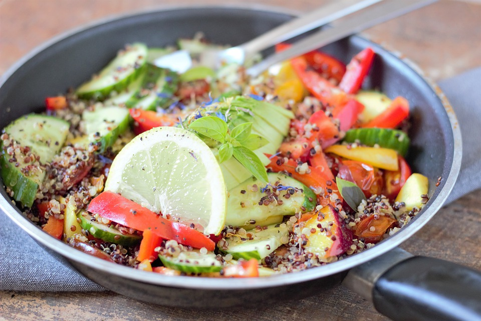
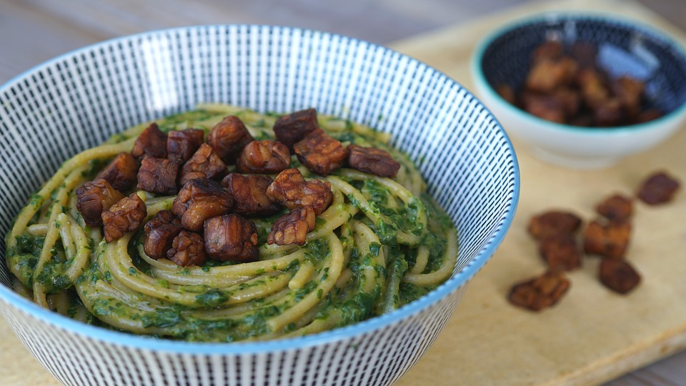

Mis on jõutreening?
Jõutreening on keha treenimine, mille käigus üritatakse maksimaalset raskust tõsta kolmes kategoorias:
kükk, lamades surumine ja jõutõmme.
Jõutreening on keha treenimine, mille käigus üritatakse maksimaalset raskust tõsta kolmes kategoorias:
kükk, lamades surumine ja jõutõmme.
Jõutreeningu levinumad harjutused on kükk, lamades surumine, jõutõmme.
Kükk on peamiselt jalgu treeniv harjutus. Kükkides tuleb raskust hoides püstiseisust kükki minna ja tagasi püsti tõusta.
Lamades surumine on ülakeha treeniv harjutus. Lamades surudes tuleb lamamispingil selili olles rinnalt kang üles tõsta.
Jõutõmbe käigus tuleb kahe jalaga maa peal seistes tõsta kätega kang üles (puusade kõrgusele).
Inimesed, kes tegelevad jõutreeninguga peavad veenduma selles, et toidud on mitmekesised: sisaldavad teravilju, kaunvilju, pähkleid, seemneid, puu- ja köögivilju (ka taimseid liha-ja piimaalternatiive). Järgnevalt tuleb läbi mõelda treeninguks vajalik valkude kogus. Selleks, et säilitada hea tervis, peab tavainimene tarbima umbes 0.8 g proteiini 1 kg kehakaalu kohta päevas. Kuid intensiivse treeninguga tegelejad vajavad rohkem. Uuringud näitavad, et "bodybuilderite" ja "powerlifterite" optimaalne proteiini tarbimise kogus päevas on 2.2 g /kg kohta. Parima valgusisaldusega toidud on näiteks: läätsed, maapähklid, kinoa, oad, tofu, kikerherned.
Kui soovid süüa midagi kergemat,
siis tee seda 1-2 tundi enne trenni.
Näiteks:
Kinoa kauss
BBQ tempeh/tofu
Video leiad siit
Kinoa kausi sisse võiks panna näiteks ube, maisi, avokaadot, salsat, tofut jne.
Kuna BBQ tofu on proteiin, siis seda võiks koos süüa tärklise ja köögiviljadega. Näiteks kartulipuder,pruun riis, täistera pasta vms ja sinna kõrvale salat või aurutatud köögiviljad.